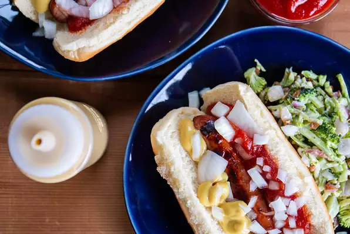

Detroit Style Coney Dogs

Description
Where I come from no Tigers game is complete without a Detroit Coney.
It's a grilled, natural-casing hot dog, loaded with chili sauce, mustard, and onions. Yummy...Detroit-style yummy!
Ingredients
- 4 hot dogs with natural casings
- 1 hot dog rolls, sliced
- 1 small onion, diced
- 1 (10 ounce) can chile sauce without beans
- 4 tablespoons prepared yellow mustard, or to taste
Instructions
- Preheat an outdoor grill for medium-high heat.
- Place hot dogs on the grill; cook until browned,
5 to 8 minutes, turning once, or until done to suit your taste. Lightly grill hot dog rolls.
- Meanwhile, place the chile sauce in a small microwave-safe bowl; cook 1 minute. Stir, and cook 1 minute more.
- Place hot dogs on buns. Top each with chile sauce, onion, and 1 tablespoon mustard, or to taste.
back to homepage